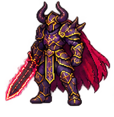
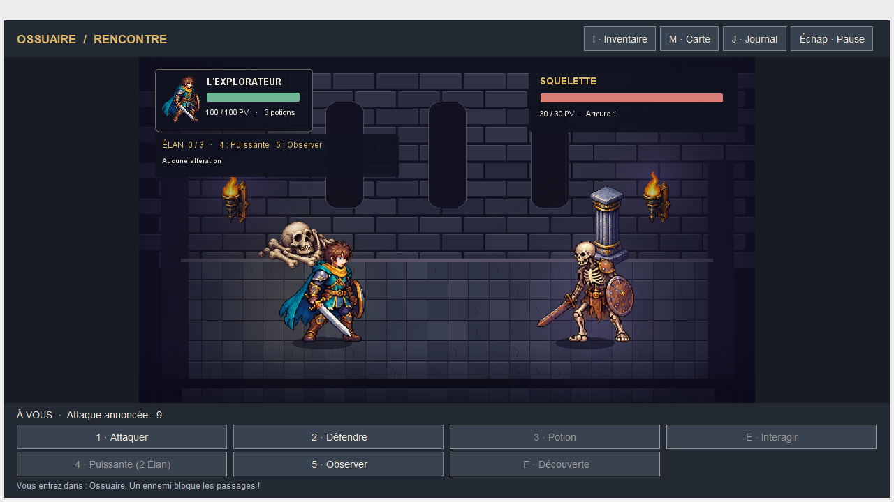
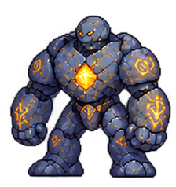
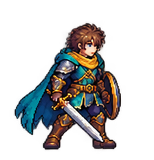

Programmation orientée objet · Java 21
Les Salles
oubliées
Comment le jeu tient-il la promesse
d’une attaque annoncée ?
Exploration · Donjon
Neuf salles, neuf passages
L’ossuaire bloque la sortie tant que le squelette est vivant.
Interface Swing · Ossuaire
Le premier échange

Squelette30 → 19
12 de puissance − 1 d’armure
Héros100 → 949 de puissance − 3 d’armure
Architecture · Trajet d’une commande
Qui modifie les PV ?
EntréeVue Swing
CommandeControleurJeu
ValidationPartie
RésolutionCombatTactique
Retour vers la vueResultatAction
Avant → Événements → Après
Commande refusée : même instantané avant et après, aucun événement.
Polymorphisme · Ennemi.decider
Le golem annonce son coup

Intention · Préparation
Attaque rapide
Interruption → vulnérabilité
Préparation laissée intacte
Prochaine intention → frappe de puissance 22
decision = e.decider(
new ContexteCombat(elan, historique, precedente, soinUtilise), hasard);Persistance · JSON version 2
Reprendre le même tour
Instantané métierCe qui survit
Ce qui survit
à la fermeture
Salle et inventaire
Intention, Élan et effets
Historique et état du générateur
01 · LireJSON strict
02 · ReconstruireVérifier les invariants
03 · AdopterPublier la partie validée
Fichier refusé → la partie en cours reste jouable.
Tests · TactiqueTest
Gagner par les commandes du jeu
200
Parcours gagnants100 graines
100 graines
× 2 routes
PV ≤ 45 Boire si possible ◆ Préparation Attaquer ◆ Onde Défendre
Le test lit la décision exacte, y compris quand l’intention affichée est vague.

Conclusion · Essais joueurs
Ce qu’il reste
à mesurer
Un nouveau joueur comprend-il
quand se défendre ?
Durée de jeu visée 10 à 15 min